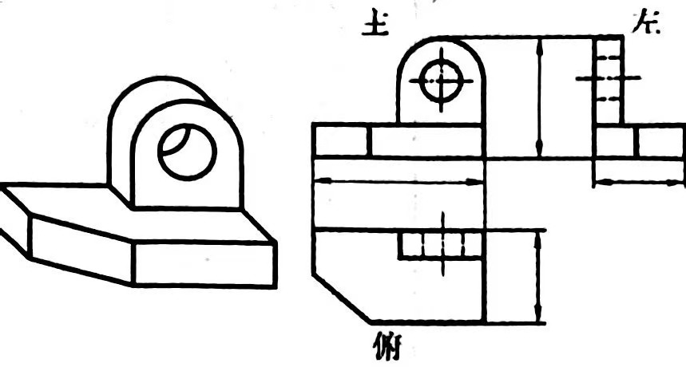
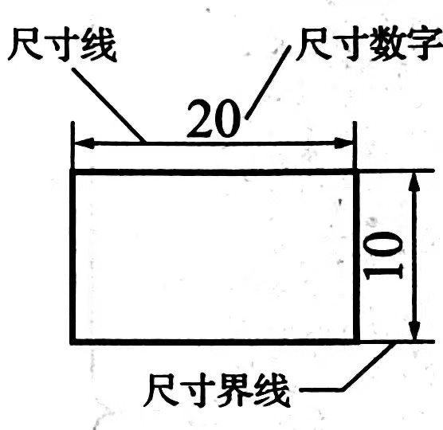
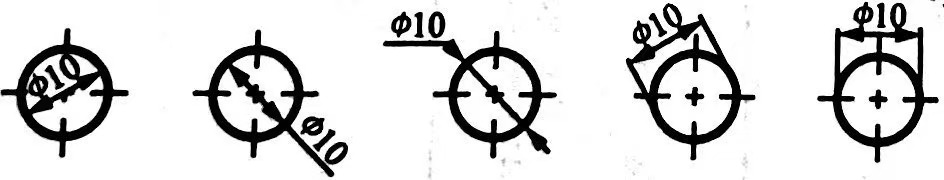
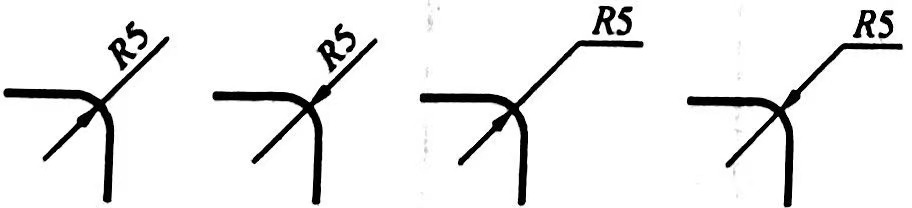
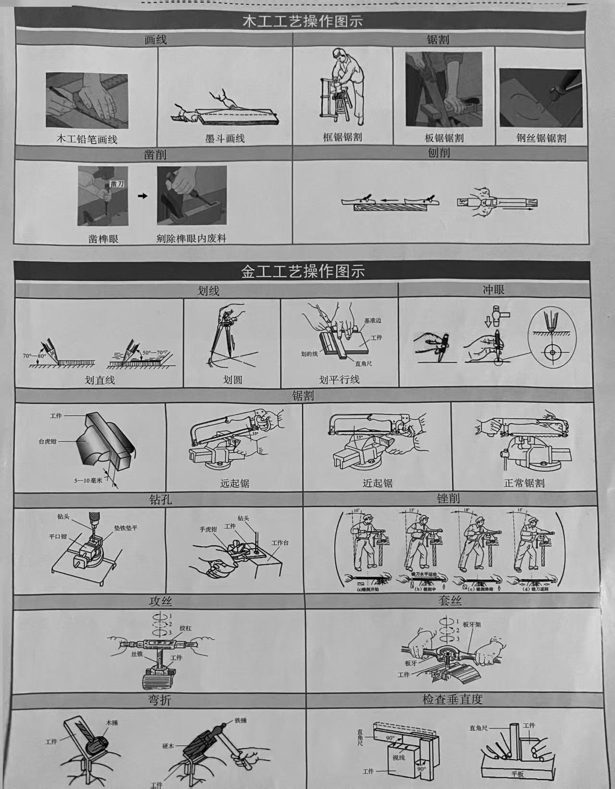

技术
发展
人的需求推动了技术的产生与发展
历史：石器时代、青铜时代、铁器时代、蒸汽时代、电气时代、信息时代
未来：充满希望、隐含危险、理性看待
价值
人 保护人（不受生理或心理上的伤害）、
解放人（解放或延伸了人的器官功能，拓展了活动空间，提高了劳动效率）、
发展人（人类在探究、使用、发展技术的过程中，改变了主观世界，
拓宽了认知范围，更新了应对问题的方法，极大地激发了创新精神和实践能力）
社会 促进了社会生产的发展，改变了社会生活的方式，丰富了社会文化的内容
自然 利用自然，改造自然，保护自然。遵循可持续发展的理念，合理开发和利用自然，
与自然和谐共生
性质
目的性 从一定的具体目的出发，针对具体的问题，
形成解决的办法，满足人们某方面的具体需求
实践性 根据人的需要把自然物加工成具有使用价值的人造物的活动,
技术产生于实践之中,技术只有在人的实践活动之中才能变为现实
综合性 具有跨学科的性质:
每一项技术(产品)都需要综合运用多个学科、多方面的知识
科学与技术的关系:注意区分科学活动与技术活动,
科学促进技术发展，技术推动科学进步
创新性 技术革新(在原有技术基础上的变革或改进),
技术发明(以原创技术为核心)
复杂性 技术的内容和体系越来越复杂,
技术使用和应用的环境越来越复杂
由于技术的复杂性，以及一定时期人类思维的局限性和有限性，技术客观上具有两面性
专利性 专利权不能自动取得，遵循先申请原则
专利的分类:发明专利/实用新型专利/外观设计专利
专利权的特性:独占性/时效性/地域性
技术中的设计
技术与设计的关系
设计的丰富内涵 设计是基于一定设想的、有目的的规划及创造活动,
技术产品的设计通常以技术设计为核心，艺术设计融入其中
设计是技术发展的重要驱动力 设计是技术成果与人的需求之间联系的纽带,
设计是技术成果转化为技术产品的桥梁,设计促进技术的革新
技术发展对设计产生重要影响 设计依赖技术得以实现,
技术进步促进人们设计思维和手段的发展
设计的一般原则
实用原则 设计的产品具有为实现其目的的基本功能
(物理功能/生理功能/心理功能/社会功能)
创新原则 引入新概念、新思想、新方法、新技术等，或对已有产品的革新
经济原则 以最低的费用取得最大的效益
道德原则 坚持为人服务的宗旨，不能出于某种不道德的目的
美观原则 形态美、技术美、材质美、色彩美等
技术规范原则 遵循一定的准则和标准
可持续发展原则 既满足当代发展的需求，又考虑未来发展的需要，
不以牺牲后人的利益和长远的利益为代价来满足当代人的需求
设计原则之间相互联系，相互制约，相互影响
设计的一般过程
动态发展循环往复
发现与明确问题 提出设计项目、列出设计要求
制订设计方案
收集信息/设计分析/方案构思/方案呈现/方案筛选/绘制图样
制作模型或原型
优化设计方案测试/评价/优化
编写产品说明书
技术试验及方法
技术试验
定义 技术活动中为了某种目的所进行的尝试、检验等探索性实践活动作用 发现问题、探究规律、优化技术;改进和完善设计，降低设计风险
类型 按目的分:性能试验、优化试验、预测试验
按领域分:农业试验、工业试验、国防试验
技术试验的方法
强化试验法 通过扩大和强化试验对象的作用，以提高试验效率测极限，常用于检测技术产品在工作状态下保证某些功能正常使用的极限条件
优选试验法 运用数理统计的方法，选定若干次具有典型意义的试验， 按一定的逻辑推出全部试验所达到的最佳效果
模拟试验法 通过再现的形式来模拟现实发生情况, 还可以通过缩小(放大)比例来模拟所设计的现场效果
虚拟试验法 利用计算机技术来模拟现实中的技术设计原型并进行试验, 常用于在现实生活中无法进行或不允许进行的试验，虚拟试验法可以节约大量资金
移植试验法 在具有差异的事物之间，将某些共同或相关的因素从一物移植到另一物上进行试验
撰写技术试验报告
内容包括试验目的、试验准备、试验过程、试验记录、试验结论等, 试验记录完整和真实,当试验现象反常时，应做出明显标记，并详细记录, 文字力求简明扼要发现与明确问题
发现问题
问题的种类
社会问题/科学问题/技术问题问题的来源
人类生存必然会遇到的问题/由别人给出问题，设计者必须针对问题寻求解决方案/ 基于一定的目的，由设计者自己主动地发现问题并试图解决发现问题的途径
观察日常生活 无意观察/有目的、有计划的观察收集和分析信息
文献法:对已有文献信息进行收集、分析
问卷调查法:用问卷的方式进行实际调查，获取信息发现问题
询问法:以询问的方式收集和获取信息、发现问题
技术研究与技术试验 从对已有技术问题的研究中发现与之相联系的问题， 从已有的研究结论中发现新的问题
在技术研究、技术试验过程中获得灵感、体悟，进而发现新的问题
明确问题
明确问题的要素
问题的目的是否明确问题表述本身是否明确
问题产生的原因是否明确
问题的应用环境是否明确
明确问题的价值
科学性 所提出的问题是否遵循了基本的科学原理新颖性 迄今为止，该问题是否已得到充分解决
普遍性 在你调查的范围里，该问题是否具有普遍意义。在更广的范围内这个问题是否有意义
主要性 在多个问题同时发生时，该问题是不是主要问题
可行性 现有的技术条件能否解决这个问题。技术发展以后呢
经济性 解决该问题所需的投入是多少，投入与产出之比是否理想
发解决问题受到的限制
设计对象的特点和问题解决的标准 不同设计对象的设计标准不同/ 设计对象还可能会受到诸如成本环境等的限制设计者的技术能力与条件
主观条件:设计者是否具有解决问题所需要的知识和技能
客观条件:问题解决或设计的过程往往要消耗一定的人力、物力、财力以及时间
明确设计要求及编写设计计划
提出具体的设计要求/制订可行的设计计划方案的构思与方法
人机关系
含义
人在使用物品时，物品与人产生的一种相互关系人机关系要实现的目标
高效 在设计中，应把人和机作为一个整体来考虑， 合理或最优地分配人和机的功能，以促进二者的协调，提高人的工作效率安全 人们在操作和使用产品的过程中，产品对人的身体不构成生理上的伤害
健康 人在长期操作或使用产品过程中，产品不会对人的健康造成不良影响
舒适 人在使用产品的过程中，人体能处于自然的状态，操作或使用的姿势能够在人们自然、 正常的肢体活动范围之内，从而使人不会过早地产生疲劳 (心理上的舒适感受也属于舒适目标)
实现合理人机关系需要处理的关系
普通人群与特殊人群静态的人与动态的人
静态尺寸是指人的构造尺寸
动态尺寸是指人的功能尺寸，包括人的动作范围、体形变化等
人的生理需求与心理需求
生理需求体现在产品对人的身体的适应和保护
心理需求体现在产品对人的精神的满足和丰富
信息的交互 人与产品的互动过程就是人与产品之间信息传递的过程
方案构思过程
进行设计分析
明确设计要求设计分析三要素
物:产品本身的特点，包括功能、造型、材料等
人:产品是为人服务的，人的需求在很大程度上决定着产品的设计
环境:产品是在一定的环境中使用的，必然受到环境的制约，对环境产生影响
构思设计方案
梳静态的人/呈现设计方案比较、权衡并呈现方案
方案的比较从设计的目的和原则出发，针对一些相互制约的问题进行分析，选出较为满意的方案或集中各方案的优点进行改进
方案的权衡
通过比较，明确各个方案对设计指标的符合程度。根据设计要求与设计原则对各个方案进行权衡，制订出最佳方案
方案的细化
综合考虑产品、制造、使用、维护等各个环节，以完善方案的构思
方案的星现
不同的产品设计一般有不同的呈现方式。设计方案时，可以运用草图法进行构思
标准件
按照标准的技术要求批量生产，具有通用性，如螺纹连接件、键、销、滚动轴承等使用标准件可以简化制作过程，实现通用通换，降低生产、维护的成本
构思方法
形态分析法
从整体的思想出发来看待事物，把事物看成是几个功能部分的集合，然后把整体拆成几个功能部分，分别找出能够实现每一部分功能的所有方法，最后再将这些方法进行重新组合，根据分析评价结果最终形成多种设计方案联想法
由甲事物想到乙事物的思维过程。借助想象，把形似的、相连的、相对的、相关的或某样，是完成机一点上有相通之处的事物加以联结设问法
通过多角度提出问题，从问题中寻找思路，进而做出选择并深入开展创造性设想检核表法/5W2H法/和田12动词法
仿生法
模拟自然生物形态进行设计功能仿生设计/形态仿生设计/结构仿生设计/肌理与质颃障仿生设计
设计图样的绘制
实际表现图
技术语言
含义 在技术活动中进行信息交流的特有的语言形式特征 言简意赅、通俗直观
应用
口头语言:交换设计想法、对设计方案进行评价
技术图样:采取某种规范形式将设计方案用图样的形式表达出来
(草图/效果图/三视图/正等轴测图/机械加工图/剖视图/装配图/电子电路图等)
表格、文字和模型:通过表格的形式对各种设计方案进行比较/ 通过文字、模型等呈现设计的构思方案并激发灵感
设计草图
设计表现的基础/草图的分类(构思草图/设计草图)/绘制设计草图的步骤技术图样
三视图
投影方法 采用三个互相垂直相交的投影面建立一个三投影面体系， 再采用正投影法将物体同时向三个投影面投影,得到三个投影图投影规律 长对正，高平齐，宽相等

形体的尺寸标注
基本要求 正确、完整、清晰、合理尺寸要素
尺寸界线:用细实线绘制,可以是图形的轮廓线、轴线、对称中心线或三者的延长线, 一般与尺寸线垂直，并超过箭头2mm
尺寸线:用细实线绘制,必须单独画出，不能与其他图线(包括轮廓线)重合或在其延长线上, 一般采用箭头作为尺寸线终端
尺寸数字:表示形体的真实大小,以毫米为单位时，不注写单位，否则必须注明, 线性尺寸的尺寸数字一般注写在尺寸线上方或其中断处(水平方向字头向上/ 垂直方向尺寸数字写在尺寸线的左侧且字头向左), 不可被任何图线所重叠穿过，否则应将图线断开

标注举例整圆或大于半圆的圆弧标注直径

半圆或不足半圆的圆弧标注半径(R)
识读其他技术图样
正等轴测图表现物体的三维结构特征，长、宽、高三条坐标轴之间的夹角为120°
剖视图
主要用来表达物体的不可见结构
剖切平面的特征:
包含内部结构，如孔、槽的轴线，或物体的对称面,平行干相应的投影面
机械加工图
根据产品的零件图，按照加工工艺步骤绘制的技术图样，是完成机械加工的主要依据, 由视图及其尺寸、标题栏和技术要求等几部分组成
装配图
表示机器或部件的工作原理、基本结构、装配关系和技术要求，是产品生产的装配要求
零件图
表示零件的结构形状、尺寸大小和技术要求，并根据它加工制造零件
电子电路图
计算机辅助设计
优点
提高工作的效率，降低劳动强度，有利于设计灵感的激发应用范围
建筑设计、产品设计、服装设计、广告设计等模型或原型的制作
特性与作用
模型的功能
使设计对象具体化/帮助分析设计的可能性
不同阶段的模型
草模/概念模型/结构模型/功能模型/展示模型
材料性能与规划
材料的性能与应用
木材:实木板材具有各向异性,
人造板材在幅面方向上的尺寸稳定性好，较实木而言适用范围更广
有较好的强度性能(抗变形、抗断裂)、良好的加工性能
金属材料:有良好的导热和导电性能，以及优良的力学性能和可加工性能
塑料:热塑性塑料/热固性塑料(常用于隔热、耐磨、绝缘、高电压等恶劣环境)
原料来源广，性能优良(质轻、具有绝缘性、耐腐蚀性等)，加工成型方便，价格低廉
新材料
选择和规划材料
材料选择:
材料的性能（符合产品的使用功能、使用环境、结构要求等）
各向异性:物体全部或部分性能随方向的不同而各自表现出一定的差异的特性
强度:材料抵抗变形和断裂的能力
刚度:材料抵抗弹性受形的能力
硬度:影响材料的耐磨性和切削加工性，与耐磨性和耐久性联系在一起
材料的工艺/材料的成本
材料规划:
料尽其用，优材不劣用，大材不小用，长材不短用
充分考虑材料的颜色、花纹和光泽，外用料要选择材质好、纹理美观、涂饰性能好的材料
考虑材料的加工余量和损耗等因素，保证各部件的顺利装配和作品的尺寸精度
工艺类别与选择
木工工艺
画线
常用工具:钢卷尺、钢直尺、角尺、木工铅笔、墨斗、画线规操作要领
高线时，要注意应将没有疵点的木料面作为正面(看面)，把有缺陷的木料面放到背面
画线工具宜细不宜粗(保证精度)，线的宽度一般不超过0.3mm，并且要均匀、清晰
画线时，必须留出一定的余量(考虑锯缝的消耗)
锯割
常用工具:框锯、板锯、钢丝锯、单刃刀锯、双刃刀锯、激光切割机操作要领:根据雷要选择合适的锯子，根据锯缝的消耗量留出余量
刨削
常用工具 平创操作要领
两手提创把，拇指和食指压创身，用匀力向前平推创子
创削时要顺应木材纹理，不能逆茬或呛茬刨
凿削
常用工具:木工凿、木锤操作要领
凿削时，左手紧握凿柄，木工凿的刃口斜面朝向废料一侧，不要让凿子左右摆动。右手拿锤子，击打凿子尾端
钻孔
常用工具:手摇钻、手电钻等操作要领
手摇钻钻孔时，钻头要固定垂直加工面，顺时针转手柄为下钻
…手电钻钻孔时，单手持钻，对准孔中心，扣紧开关，均匀用力加压。待孔快钻透时，减小压力
连接方式
螺栓连接、钉接、榫接、合页连接、角码连接、胶连接表面处理
表面打磨/抛光木工刨削(加工面较大)、木工锉锉削(加工面较小)、抛光机和细砂纸打磨(精细化加工)
表面涂层/防腐
涂刷油漆或清漆
金工工艺
划线
划线需要先划出基准线和中心线划线时，划针紧贴导向工具，尽量一次划成
样冲斜着靠近冲眼部位，冲眼时冲尖对准划线的交点，敲击前要扶直样冲，敲击时锤面与样冲垂直
工具:钢直尺、角尺、划针、划规、样冲
锯割
起锯装夹锯条:锯齿尖朝前，材料越硬或越薄，选用的锯齿越细
左手大拇指挡住锯条，起锯角约为15°
起锯行程要短，压力要小，速度要慢
当锯条陷人工件2~3 mm时，开始正常锯割
正常锯割
站位和握锯姿势要正确
推锯加压，回拉不加压
锯程要长，推拉要有节奏
锯割快结束时，减小推锯时的压力
工具 钢锯、台虎钳
锉削
右手紧握锉柄，左手握住或扶住锉刀的前端在推锉过程中，左手的施压由大变小，右手的施压由小变大，使刀平稳而不上下摆动
工件上的切屑应用毛刷刷去，锉刀中的切屑应用钢丝刷刷去(不能用吹或用手去清除切屑)
工具 平锉、圆锉、半圆锉、三角锉、方锉、钢丝刷、毛刷、台虎钳
钻孔
步骤 冲眼定位一装夹钻头一装夹工件→钻孔二要 要集中注意力;要戴防护眼镜
二不 不准戴手套操作;不能用手直接扶持工件
工具 台钻、平口钳或手钳
连接方式
螺纹连接
加工内螺纹(攻丝)起攻时，可用一只手的掌心按住扳手中部沿丝锥轴线下压，另一只手配合做顺向旋进
两手握住绞杠两端，均匀施加压力，并将丝锥顺时针方向旋进，确保丝锥中心与孔中心线重合， 不使其歪斜，并经常倒转1/4-1/2圈，避免铁屑阻塞而卡住丝锥
当丝锥的切削部分全部进入工件时，就不再施加压力
工具 丝锥和丝锥扳手
加工外螺纹(套丝)
起套时，可用一只手的掌心按住扳手中部沿工件轴线下压，另一只手配合做顺向旋进
两手握住扳手两端，均匀施加压力，并将板牙顺时针方向旋进一段后，再按逆时针族出1/4~1/2圈， 避免铁眉阻塞而卡住板牙，并确保板牙中心与工件中心线重合，不使其歪斜
工具 圆板牙和板牙扳手
非螺纹连接
铆接、黏结、焊接等
制作模型或原型
根据设计方案选择恰当的加工工艺来制作模型
电子电工常用的工具:
剥线钳/电烙铁
(焊接前，同时加热焊盘和焊件，先故电烙铁，后放锡线,
焊接时，先拿开锡线，后拿开电烙铁，完成焊接)/多用电表
技术交流与评价
设计评价与优化设计方案
设计的评价
定义 依据设计的一般原则和要求，采取一定的方法和手段对设计所涉及的过程及结果进行事实判断和价值认定的活动评价的分类
评价对象:对设计过程的评价/对设计成果的评价 (参照设计的一般原则进行评价/依据事先制订的设计要求进行评价)
评价者:自我评价/他人评价
评价的方法
图表法/雷达图法(雷达图中各项指标的数值越大，产品对使用者/设计制作者越有利 /同一类产品，需在相同的评价角度和评价指标下进行比较)/ 评价报告(包括作品概况、评价依据、评价方法、评价内容、评价结论等要素)
优化设计方案
功能优化 强化主要功能、增加功能、去除不必要的附加功能结构优化 对结构进行巧妙、合理的优化
材料优化 降低生产成本，减少资源浪费
外观优化 对形状、色彩、质感进行优化
技术作品说明书及编写
说明书的一般结构
标题/正文/产品标记说明书的形式
条款直述式/自问自答式说明书编写的注意事项
充分考虑用户的阅读需要符合国家相关法律、行政法规的要求
体现产品的设计特点
有所侧重
准确、通俗、简洁
说明书的作用
帮助用户了解产品特性，确保用户正确、安全地使用产品技术产品的使用、维护和保养
对设计者的要求使用通用的标准部件/配备必要的一般维修工具/提供易识读的符号标志/便于拆装，确保安全 对使用者的要求
认真阅读产品说明书/熟悉产品使用与维护的途径和基本方法